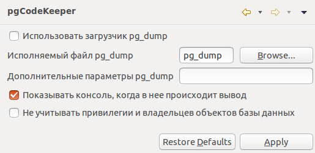

Использовать загрузчик pg_dump - для загрузки базы данных использовать pg_dump вместо JDBC.
Исполняемый файл pg_dump - путь к утилите pg_dump, либо к другому исполняемому файлу или скрипту, реализующему интерфейс pg_dump.
Дополнительные параметры pg_dump - позволяет задавать дополнительные параметры вызова утилиты pg_dump.
Показывать консоль - позволяет автоматически показывать консоль программы при выводе в нее.
Не учитывать привилегии и владельцев объектов - позволяет отключить поиск различий в свойствах объектов, связанных с ролями БД.